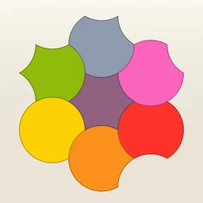
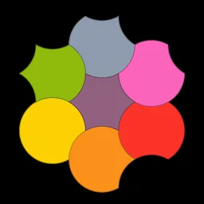
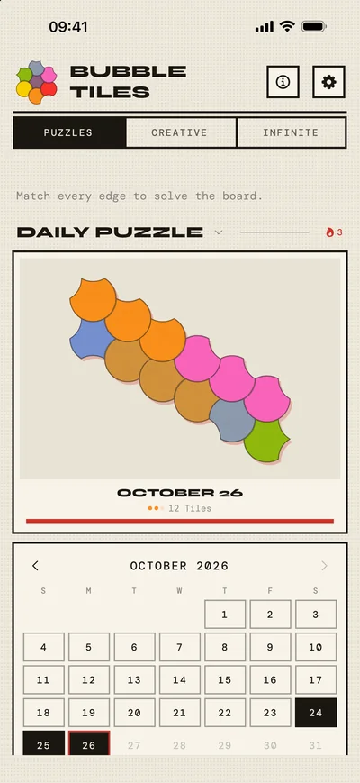
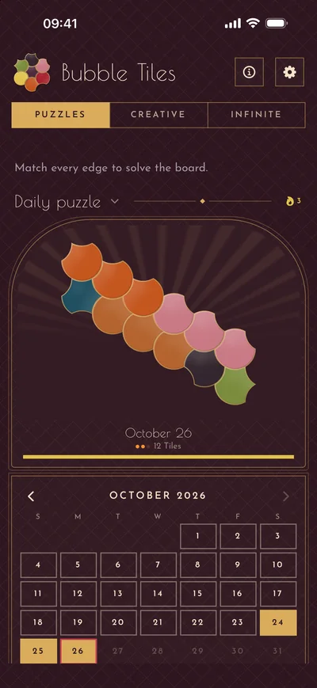
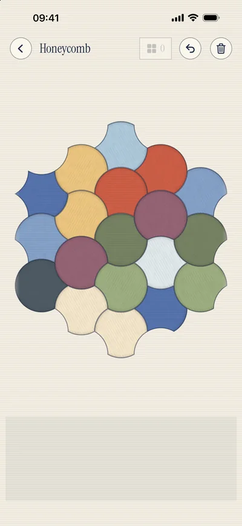
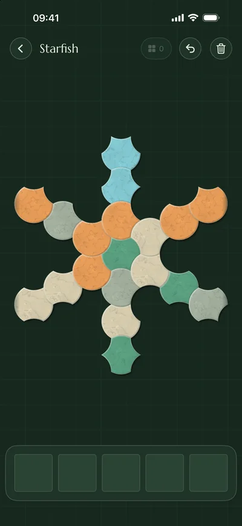
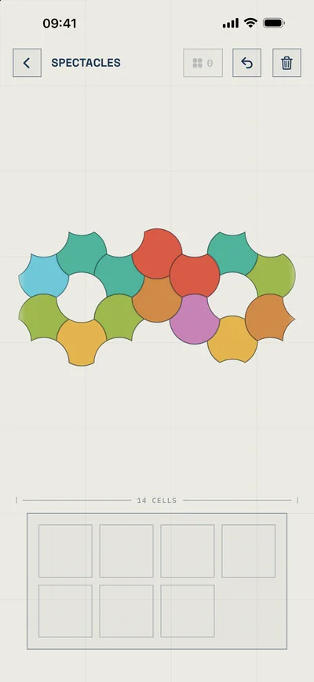
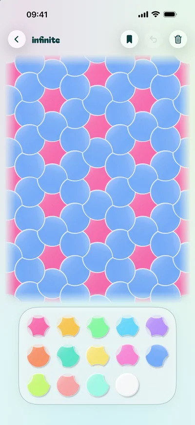

Bubble Tiles
Curvy hexagon puzzles
The tiles are hexagons with circular arcs instead of straight edges – fit them together so that a bulge always meets a hollow.
With the MathHappens Foundation






Privacy Policy
Bubble Tiles does not collect, store or share any personal data. There are no user accounts, no analytics, no advertising and no third-party SDKs. The app makes no network requests of its own.
In-app purchases are handled by Apple; the app does not see any payment data.
All game progress – solved levels, discovered solutions, custom boards and settings – is stored only locally on your device and is deleted when you delete the app.
Support
Questions, feedback or bug reports are always welcome: bubble-tiles@outlook.com
Datenschutzerklärung
Bubble Tiles erhebt, speichert und teilt keinerlei persönliche Daten. Es gibt keine Benutzerkonten, keine Analyse-Dienste, keine Werbung und keine Dritt-SDKs. Die App stellt selbst keine Netzwerkverbindungen her.
In-App-Käufe wickelt Apple ab; die App sieht keine Zahlungsdaten.
Sämtlicher Spielfortschritt – gelöste Level, gefundene Lösungen, eigene Boards und Einstellungen – liegt ausschließlich lokal auf deinem Gerät und wird mit dem Löschen der App entfernt.
Support
Fragen, Feedback oder Fehlerberichte sind jederzeit willkommen: bubble-tiles@outlook.com